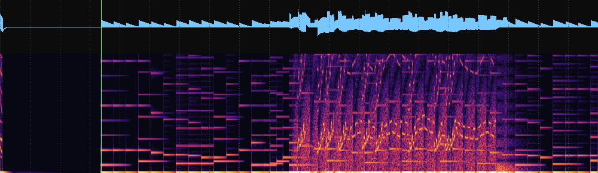
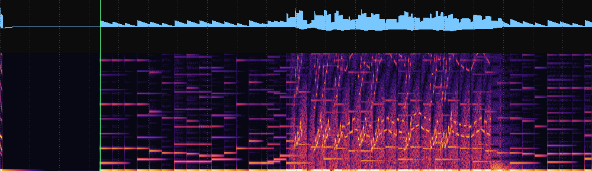
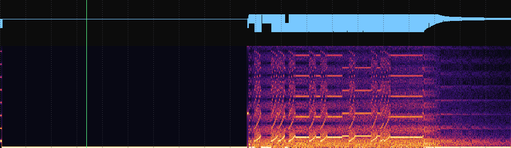

Twenty seconds, the same sound commands into each. Waveform on top, spectrogram 0–4 kHz below, one dotted line per second. The green line at 3.38 s is where the game selects its tune.
The ladder of short horizontal bars is the melody, one bar per note. The dense block from about 10 to 17 s is a bird on screen.

The gateware's own output, from sim/run_audio.sh. This is what
the core plays once it recognises the game.

Identical commands, game select left at Pleiads. No melody at all — silence where the tune should begin, then held beeps during play. On hardware the game was never recognised: the Pocket holds each ROM byte's write strobe for four clocks, and the checksum that identifies the game counted every byte four times.
